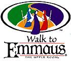

What Is The Walk to Emmaus?
 The above story provides the image for Emmaus, an Upper Room program that calls forth and renews Christian discipleship. Like its predecessor, Cursillo de Christiandad (Spanish for "short course in Christianity"), the Walk to Emmaus is a three-day experience which takes a New Testament look at Christianity as a lifestyle. It is a highly structured weekend designed to strengthen and renew the faith of Christian people, and through them their families, congregations and the world in which they live. Emmaus is a combined effort of laity and clergy toward the renewal of the church.